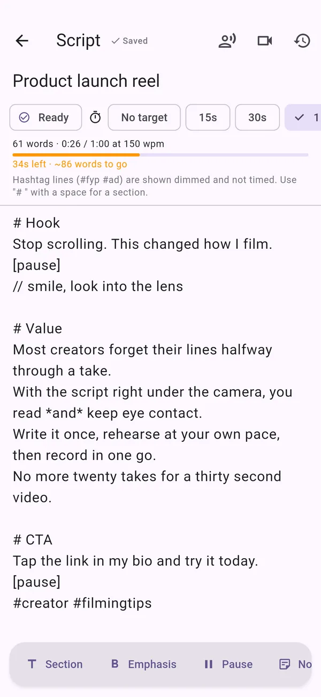
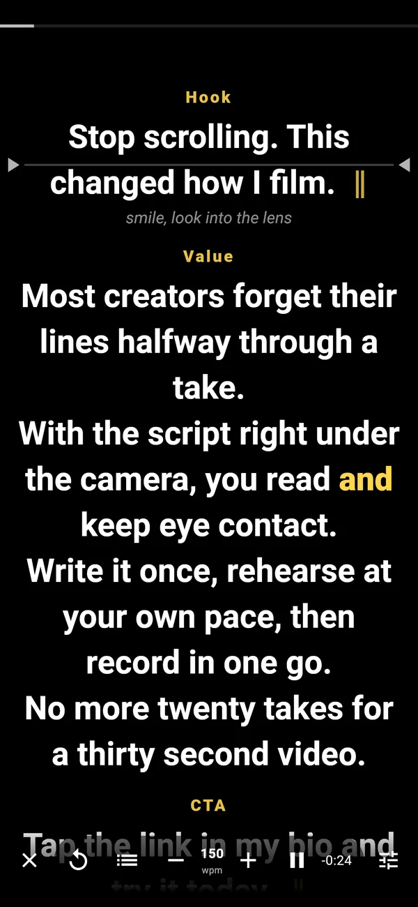
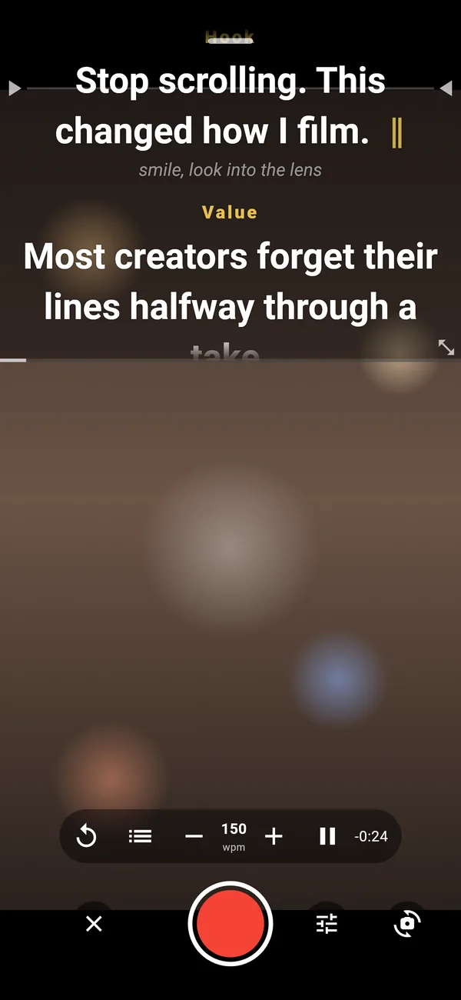
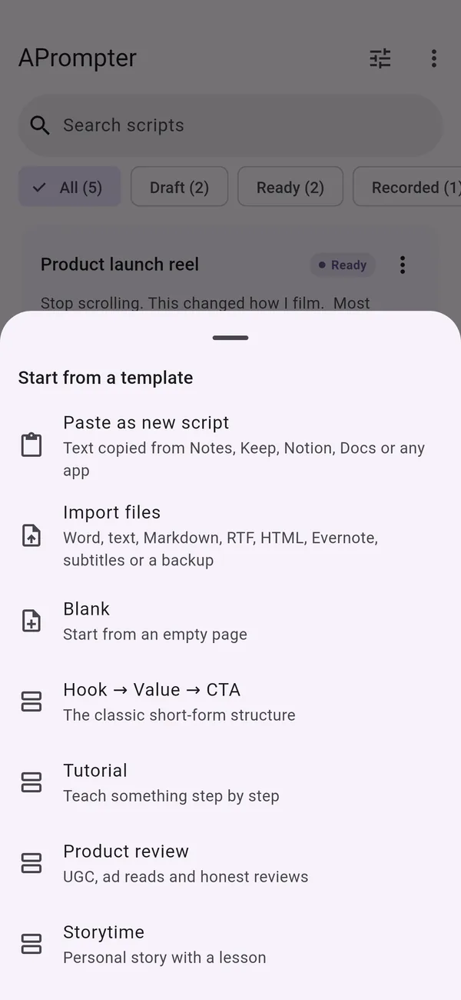
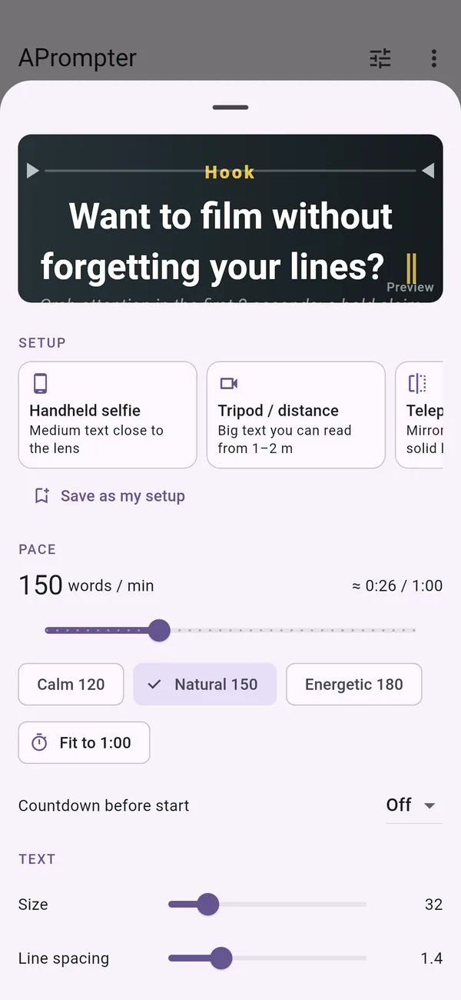
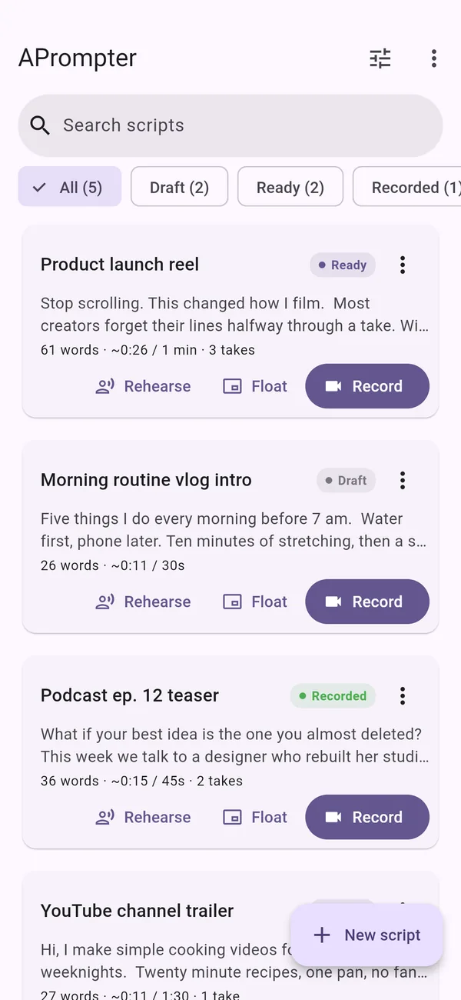

In testing on Android
Read your script while you film.
The text scrolls just under the camera, so you can read your lines and still look into the lens. I made it for people who film Reels, TikToks, Shorts and YouTube videos.
One script is free, with every feature. You don't need an account, and there are no ads or tracking.
How it works
You write the script, practise it, then film it
-

Write
Set how long the video should be, and a timer tells you whether your script fits. You can mark sections, emphasis and pauses while you write.
-

Rehearse
Read it out loud at a pace you set in words per minute. Afterwards the app suggests a pace based on how fast you spoke.
-

Record
Film with the text under the lens. Watch each take back, then keep it or redo it from any section.
Features
What's in it
Getting a script in
Share a note from Google Keep, Samsung Notes or Apple Notes to APrompter, paste text from Notion or Google Docs, or open a file. Headings turn into sections and bold text turns into emphasis.
- Share to APrompter from the share sheet, or Open with on a file
- Paste as new script cleans up text copied from Docs, Word and chats
- Save as text file to send a script back to Notes, Keep, Drive or email
- .txt
- .md
- .docx
- .rtf
- .odt
- .html
- .enex
- .srt
- .vtt

Set it up for how you film
Choose how you film, then adjust the details while you watch a live preview.
- Handheld selfie: medium text, reading line close to the lens
- Tripod / distance: big text you can read from one or two meters
- Teleprompter glass: mirrored text on a solid background
- Pace from 40 to 400 words per minute, a countdown, text size, spacing and color

Your scripts
Each script is marked draft, ready or recorded, and shows how long it takes to say and how many takes you've done.
- Search and filter by status
- Autosave and version history for every script
- 30 days in Recently deleted, and a backup file for all your scripts
- Copy as caption: the spoken text, ready to paste under your post

Float over your camera app
On Android the prompter can sit on top of TikTok, Instagram, CapCut or your camera app. If you record or share your screen, it shows up as a blank box, so nobody sees your script.
Redo one section
Jump to any section, pinch to change the text size without losing your place, and let the recording stop on its own after the last line.
Where your takes go
To your gallery, or inside the app if you'd rather keep them out of photo sync and cloud backups.
Languages
The app comes in 28 languages, including English, Bahasa Indonesia, Nederlands, Español and 日本語. Bluetooth remotes and keyboards work with it too.
Privacy
Your scripts don't leave your phone
APrompter never sends your scripts or videos anywhere. The only time it goes online is to check whether you've bought APrompter Unlimited. Read the privacy policy.
- No account
There's nothing to sign up for. If you buy Unlimited, it's tied to your Google Play or App Store account.
- No ads
Not in the free version, and not in Unlimited.
- No tracking
There are no analytics or crash-reporting tools in the app.
Plans
What's free and what isn't
Free
Enough to film your first script.
- One script of your own, plus the sample script
- Every prompter, rehearsal and recording feature
- Sharing, text-file export and backups
- Scripts over 500 words show a reminder
APrompter Unlimited Monthly · Yearly · Lifetime
For when you film a lot.
Everything in Free, plus:
- As many scripts as you like
- No reminder on long scripts
- Pay monthly or yearly, or pay once for lifetime
- Restore it on a new phone with the same store account
Prices are shown in the app and the store in your currency before you buy. Depending on where you live, tax is included in the price or added at checkout. Subscriptions renew automatically until you cancel them in your store account. See the terms of use.
FAQ
Questions
Do I need an account?
No. Open the app and start writing. If you buy APrompter Unlimited, it belongs to your Google Play or App Store account, and Restore purchases brings it back on a new phone.
Does it work with TikTok, Instagram or CapCut?
On most Android phones, yes: Float puts the prompter on top of your camera app. (Android Go and other low-memory phones can't float apps; there you film with Record.) On both Android and iPhone you can also film in APrompter itself with Record and post the video anywhere.
Is there an iPhone version?
It's built, and it comes out after the Android version. On iPhone, apps can't float over other apps, so there you film with Record.
Where are my scripts stored?
On your phone, inside the app. You can back them up to a file, or share a script to Notes, Drive or email whenever you like.
Can I use a teleprompter glass or a remote?
Yes. The Teleprompter glass setup mirrors the text, and Bluetooth remotes and keyboards can play, pause, change speed and jump between sections.
How do I cancel a subscription?
In your store account. On Android: Google Play, then Profile, Payments & subscriptions, Subscriptions. On iPhone: Settings, your name, Subscriptions.
Android testing
Help test APrompter
APrompter is in a closed test on Google Play. Email me the address of your Google account and I'll send you an invite, so you can install it before it's released.